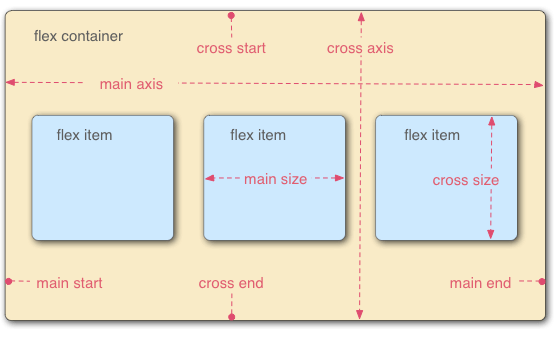

https://www.runoob.com/w3cnote/flex-grammar.html
使用:
display: flex;
display: inline-flex;
注意:
子元素的float、clear和vertical-align属性将失效
网页：

1.基本属性：
设置容器的属性有:
display:flex;
项目排列方向: flex-direction: row（默认值） | row-reverse | column |column-reverse // row: 水平主轴，column: 垂直交叉轴
超出范围则多行排列: flex-wrap: nowrap（默认值不换行） | wrap | wrap-reverse // 换行则能对子元素设置宽
flex-direction属性和flex-wrap属性的简写形式: flex-flow: ;
主轴对齐方式: justify-content: flex-start（默认值，左对齐） | flex-end（右对齐） | center（居中） |space-between（两端对齐） | space-around（每个项目两侧的间隔相等） | space-evenly（兼容性，flex 容器起始边缘和第一个 flex项之间的间距和每个相邻 flex 项之间的间距是相等）
交叉轴对齐方式: align-items: stretch（默认值，占满整个容器） | center | flex-end | baseline（与第一行文字的基线对齐） | flex-start
多根轴线的对齐方式: align-content: stretch（默认值，轴线占满整个交叉轴） | flex-start | center（交叉轴中点对齐） | flex-end | space-between（交叉轴两端对齐，轴线之间的间隔平均分布） | space-around（每根轴线两侧的间隔都相等） | space-evenly // 多行排列
设置项目的属性有:
主轴排列顺序: order: 0（默认值） | // 越小越靠前
缩小比例: flex-shrink: 1（默认值） | // 在主轴溢出，压缩项目，如果一个项目的flex-shrink属性为0，其他项目都为1，则空间不足时，前者不缩小，没有负数
放大比例: flex-grow: 0（默认值） | // 分配剩余空间
分配多余空间之前，项目占据的主轴空间: flex-basis: auto（默认值） | // 根据flex-direction判定，row：优先级高于width，column：优先级高于height,两种情况下，非auto优先级高
flex-grow, flex-shrink 和 flex-basis的简写: flex: none | auto | @flex-grow @flex-shrink @flex-basis
单个元素在交叉轴方向上的对齐方式: align-self: auto（默认值） | flex-start | flex-end |center | baseline| stretch
2.主轴：水平方向，交叉轴：垂直方向
react-native:
默认值不同：flexDirection的默认值是column而不是row，而flex也只能指定一个数字值。